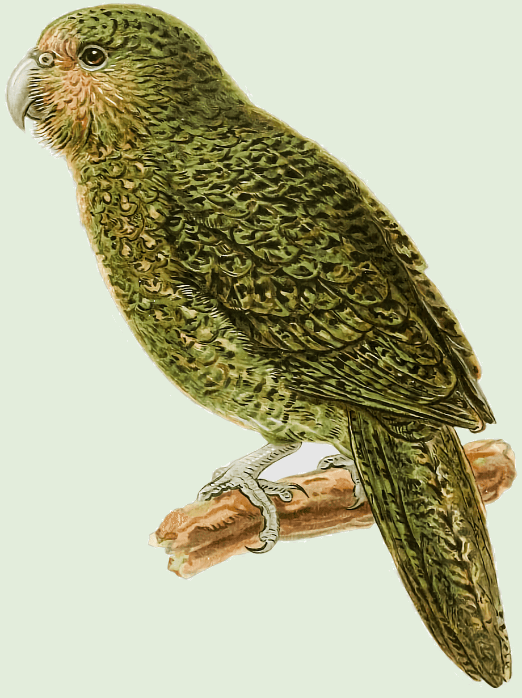

A kakapókról röviden

A kakapó vagy bagolypapagáj a papagájalakúak rendjébe és a bagolypapagáj-félék öregcsaládjába tartozó faj. A kakapó éjszaka aktív, földön fészkelő madárfaj, amely Új-Zélandon őshonos. A világ egyik legritkább madara. E madárfaj testfelépítése jellemzően az óceáni szigeteken kifejlődött madarakéhoz hasonló és a kevés ragadozó és a bőséges élelemforrások miatt jellemzően robusztus felépítésű, kevésbé fejlett mellizomzata és szárnyainak izomzata nem teszi lehetővé, hogy képes legyen a repülésre.
A kakapó súlyosan fenyegetett madárfaj, 2017 decemberében a teljes ismert egyedszáma mindössze néhány példány volt. A Kakapo Recovery Programme részeként a legtöbbjüknek saját nevet is adtak. 2012 áprilisa óta a megmaradt kakapó állományt három ragadozó állatfajoktól mentes szigeten tartják, melyek Codfish- (Whenua Hou), az Anchor-, illetve a Little Barrier- szigetek, ahol szigorúan ellenőrzik az állományt. Két nagyobb, a Fiordland területéhez tartozó szigeten, a Resolution- és a Secretary-szigeten, nagyszabású ökológiai élőhely-rekonstrukciós programot indítottak, hogy létrehozzanak ez által egy önfenntartásra képes, megfelelő élőhelyet a kakapók számára.
Megjelenése
- A kifejlett madarak magassága 58-64 cm körül van, és testsúléyuk 2-3 kg
- A szárnyai visonylag kicsik, emelett a teste sok zsír felhalmozására képes, emiatt képtelen a repülésre
- Csőre erős, vastag, lefelé kerekedő. Magasabb, mint amilyen hosszú, szinte már függőleges irányú, a hegye pedig meglehetősen tompa és rövid.
- Lába igen erős, csüdje hosszú és vastag, ujjai ugyancsak jó hosszúak és vastagok; karmai erősen hajlottak, hegyesek.
- Szárnya rövid, kerekített, az ötödik evező a leghosszabb, a szárny hegye rövid.
- A meglehetősen hosszú farok vége enyhén kerekített.
Előfordulása
Új-Zéland területén honos. A fák gyökérzete között levő földi üregekben és lyukakban él, de néha előrehajló sziklák tövében is találkozunk vele. Valaha egész Új-Zéland hegyvidéki erdeiben honos volt. Ma három kis erdős szigeten (Codfish-sziget, Anchor-sziget, Little Barrier-sziget) próbálják megmenteni.
Életmódja
| A kakapó életmódja | |
|---|---|
| Táplalkozás | Éjszakai állat révén éjjel járja a territóriumát bogyókra, bogarakra, és kisebb gyíkokra vadászva. |
| Párzás | A párzási időszak decembertől februárig vagy májusig tart. Nem költ minden évben. Párzási időszakban a hím erős, messzire hangzó kiáltásokkal hívja a nőstényt. A tojó nagy távolságokból látogatja meg a hímet, párzik vele, majd megy a dolga után. |
| Tojásrakás | Fák gyökerei alatti üregben fészkel. Fészekalja 2-4 tojásból áll. A tojó egyedül neveli fel fiókáit. Nem költenek minden évben, a madarak között az egyik legalacsonyabb reprodukációs rátával rendelkeznek |
| Mozgásuk | Igaz, a kakapók nem képesek repülni, ám a fákra való felmászásban kifejezetten ügyesek és képesek, akár a legmagasabb fák koronájába is felkapaszkodni. Gyakran levitorláznak a fákról, amely során kitárt szárnyaikat használják az egyensúlyozáshoz siklás közben. Ezen a módon akár 100 métert is vitorlázhatnak. |